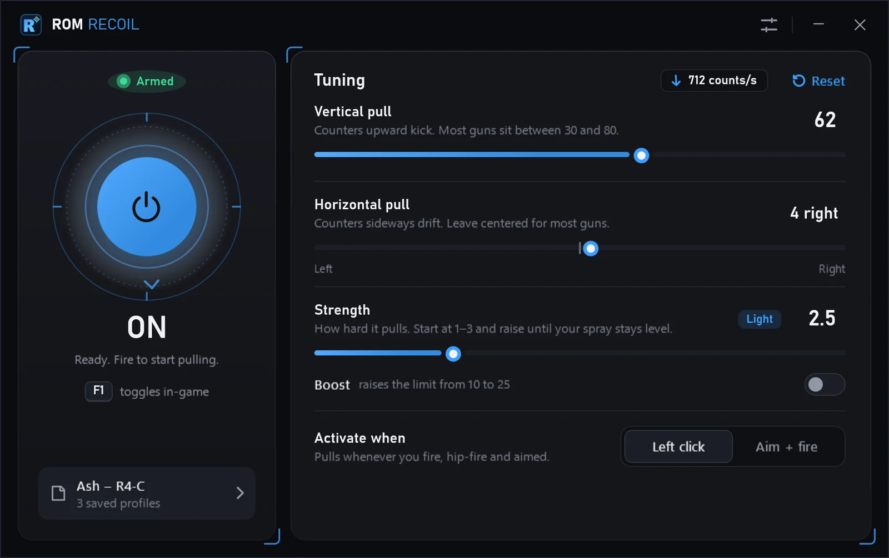

01 ROM Polybot
ROM Polybot
A desktop app for Polymarket US.
ROM Polybot connects to your Polymarket US account, watches the US markets and their large trades, and lets you run a strategy on $1,000 of practice money. Live trading starts paused.
Free · Windows 10/11 and Apple Silicon Macs

Your account and strategy at a glance. Trading starts paused.
Expand screenshot. Opens in a new tab.Screens from the app itself, not mockups.
- Market
- Polymarket US
- Practice balance
- $1,000, simulated
- Live trading
- Off until you enable it
- Runs on
- Windows, Apple Silicon
- Price
- Free
How Polybot works
Market scanning, practice, risk limits and a record of every decision, in one desktop app.
Scan the US market
Watch Polymarket US markets, large trades and momentum from the authenticated US trade stream.
Practice on $1,000
Run your strategy on a simulated balance kept apart from your real account. Practice fills are estimates.
Limits you set
Cap each position, total exposure and daily loss, and hold cash back. While live, an emergency stop sits in the title bar.
A reason for every decision
Decision history shows why each candidate was skipped, practiced or sent, and what live trading still needs.
Live orders stay off until your account is connected, limits are saved, evidence qualifies and buying power is available.
Download
Polybot
Connect your Polymarket US API keys, set your limits, and run Practice before you decide whether to trade live.
Trading involves risk. Returns are not guaranteed.
Installers are unsigned; the Mac build is not Apple-notarized.
Installation & verification
02ROM Nova
Research Solana
wallet activity.
ROM Nova shows Solana wallet and market activity on one radar, in your browser or on Windows. It is a research tool and never places trades.
Research only; no trade execution. Some data is simulated. The browser app requires sign-in.

03 ROM Recoil
ROM Recoil
Recoil control for Rainbow Six Siege.
ROM Recoil moves your aim down while you hold fire, by the amount you set. Save a setting per operator and switch it on or off in-game with one key. Free for Windows.
Macros can break a game's terms of service. Use at your own risk.

Questions
About Polybot, Nova and the downloads. ROM Recoil has its own questions.
What do I need for Polybot?
A Windows 10 or 11 PC (64-bit), or an Apple Silicon Mac running macOS 15 or later, plus a verified Polymarket US account and its API Key ID and Secret Key. Create API keys on Polymarket US . No separate Python install is needed. Wallet-address copy trading is not supported on Polymarket US.
Does Polybot guarantee a profit?
No. Signal scores are heuristics, not verified win probabilities. Practice uses simulated fills that can differ from exchange execution. Live authenticated trading and profitability remain unverified, and automated trading can lose money.
How does the ROMANR offer work?
New Polymarket US users can view the current offer with code ROMANR. Polymarket sets the amount, eligibility and qualifying steps. It may change or expire, and ROM may receive a referral reward.
How do updates work?
Polybot checks for new releases while it is open, downloads the matching installer in the background and verifies its SHA-256 checksum before offering it. Installing always waits for you, so an update never interrupts a running strategy. Every change is listed in the release notes.
Why might my computer warn about the download?
The installers are not yet code-signed. Use the published checksums and installation guide to verify the file before deciding whether to install it. A matching checksum confirms file integrity, not software safety.